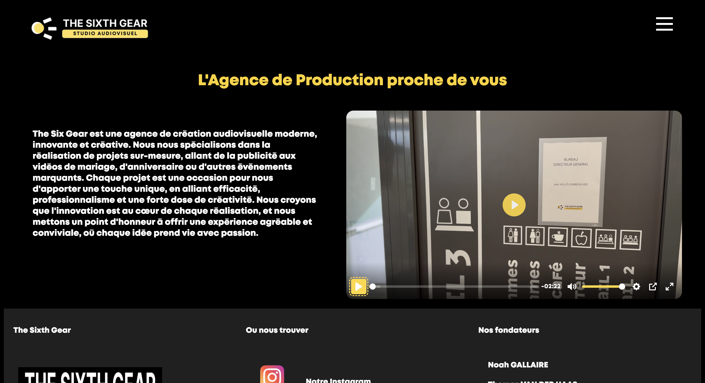

Je m'appelle Noah Gallaire, actuellement agé de 18 ans, je suis étudiant en première année de BUT MMI à l'IUT de Castres. Après une première année en Informatique à Blagnac, j'ai réalisé que je me sentais beaucoup plus à ma place dans le monde du multimédia et de l'audiovisuel. J'adore la création de contenu sur les réseaux comme TikTok ou Twitch. Dans mes études, j'apprends à me servir d'outils de création qui me seront utiles pour mes projets personnels, comme le montage vidéo, la mise en place d'une emission en direct avec une production de qualité et bien d'autres compétences qui me permettent de développer ma créativité et de concrétiser mes idées.
MES PROJETS
Voici quelques uns des projets que j'ai réalisés depuis le début de mes études :

Web design · Intégration
Site Agence
J'ai participé à la création du web de l'agence d'audivisuel "The Sixth Gear". J'ai réalisé l'intégration du site en HTML et CSS en m'assurant de respecter la charte graphique que nous avions définie collectivement. Ce projet m'a permis de mettre en pratique mes compétences en responsive design et d'améliorer ma maîtrise des outils de développement web.
J'ai réalisé une analyse de marché pour un projet de food truck destiné aux étudiants de l'IUT de Castres. J'ai étudié les habitudes alimentaires des étudiants, identifié les concurrents locaux et proposé une stratégie de positionnement pour le food truck. Ce projet m'a permis de développer mes compétences en recherche et analyse de données, ainsi que ma capacité à formuler des recommandations stratégiques.
Avec mon équipe d'agence, nous avons créé une charte graphique pour notre agence d'audiovisuel. J'ai participé à la définition de l'identité visuelle de l'agence, en choisissant les couleurs, les typographies et les éléments graphiques qui reflétaient le positionnement de l'agence. Ce projet m'a permis de développer mes compétences en design graphique et de mieux comprendre l'importance d'une identité visuelle cohérente pour une marque.